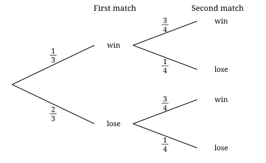

<script src="/assets/redirect.js"></script>
<section class="theory" data-section="IGCSE-24.2">
<h2>24.2 Calculating probability from tree diagrams</h2>
<p class="src">Based on Cambridge IGCSE Mathematics Core and Extended Coursebook (Karen Morrison and Nick Hamshaw), Chapter 24 Probability using tree diagrams and Venn diagrams, printed pp.833–836. Own wording and new numbers, following the coursebook rules of multiplying along branches and adding the results of different paths.</p>
<p class="key-words"><strong>Key words:</strong> <em>tree diagram</em>, <em>independent events</em>, <em>combined events</em>, <em>at least one</em></p>
<h3>Multiplying along the branches</h3>
<p>On a <strong>tree diagram</strong>, the probability of a combined outcome is found by <strong>multiplying</strong> the probabilities along its path. For <strong>independent events</strong> \(A\) and \(B\),</p>
<p>\[P(A\text{ and }B)=P(A)\times P(B).\]</p>
<h3>Adding different paths</h3>
<p>If an event can happen in more than one way, find the probability of each path and then <strong>add</strong> them. For example, 'exactly one' usually means two paths.</p>
<h3>At least one</h3>
<p>'<strong>At least one</strong>' means one or more. It is often quickest to use the complement:</p>
<p>\[P(\text{at least one})=1-P(\text{none}).\]</p>
<p>The probabilities of all the end points of a tree add up to 1, which is a useful check.</p>
<div class="worked-example">
<h4>Worked example 1: Rain on two days</h4>
<p class="src">Coursebook, 24.2, probabilities from a tree diagram. New numbers.</p>
<p></p><p>The probability that it rains on any day is 0.2, independently of other days. Find the probability that it rains on exactly one of Monday and Tuesday.</p>
<ol class="steps">
<li>Rain then no rain: \(0.2\times0.8=0.16\) <span class="mark">M1</span></li>
<li>No rain then rain: \(0.8\times0.2=0.16\) <span class="mark">M1</span></li>
<li>\(0.16+0.16=0.32\) <span class="mark">A1</span></li>
</ol>
<p class="final"><strong>Answer:</strong> \(0.32\)</p>
</div>
<div class="worked-example">
<h4>Worked example 2: At least one</h4>
<p class="src">Coursebook, 24.2, using the complement. New numbers.</p>
<p>Two independent alarms each fail to ring with probability 0.1. Find the probability that at least one of them rings.</p>
<ol class="steps">
<li>\(P(\text{neither rings})=0.1\times0.1=0.01\) <span class="mark">M1</span></li>
<li>\(P(\text{at least one rings})=1-0.01=0.99\) <span class="mark">A1</span></li>
</ol>
<p class="final"><strong>Answer:</strong> \(0.99\)</p>
</div>
<h3>Common mistakes</h3>
<ul><li>Adding along a path instead of multiplying.</li><li>Finding only one of the paths for 'exactly one'.</li><li>For 'at least one', using \(1-P(\text{both})\) instead of \(1-P(\text{none})\).</li></ul>
<h3>Past paper</h3>
<p class="src">0580/41/O/N/16 Q7, official QP and official MS.</p>
<p>A train stops at station \(A\) and then at station \(B\).</p><p>If the train is late at station \(A\), the probability that it is late at station \(B\) is 0.9.</p><p>If the train is not late at station \(A\), the probability that it is late at station \(B\) is 0.2.</p><p>The probability that the train is late at station \(A\) is 0.3.</p><p>(a) Complete the tree diagram. [2]</p><p></p><p>(b) (i) Find the probability that the train is late at one or both of the stations. [3]</p><p>(ii) This train makes 250 journeys.</p><p>Find the number of journeys that the train is expected to be late at one or both of the stations. [1]</p><p>(c) The train continues to station \(C\).</p><p>The probability that it is late at all 3 stations is 0.27.</p><p>Describe briefly what this probability shows. [1]</p>
<details><summary>Mark scheme</summary>
<ol class="steps">
<li>(a) 0.7 (not late at \(A\)) and 0.1 (not late at \(B\) after late at \(A\)) correctly placed <span class="mark">B1</span> Official MS: 0.7, 0.1 oe correctly placed, 1.</li>
<li>(a) 0.2 (late at \(B\)) and 0.8 (not late at \(B\)) after not late at \(A\), correctly placed <span class="mark">B1</span> Official MS: 0.2, 0.8 oe correctly placed, 1.</li>
<li>(b)(i) \(P(\text{late at neither})=0.7\times0.8\) <span class="mark">M1</span> Official MS: 0.44 nfww, 3 marks; M2 for 1 − their 0.7 × their 0.8, or for 0.3 + their 0.7 × their 0.2 oe; or M1 for their 0.7 × their 0.8, or two of 0.3 × 0.9, 0.3 × their 0.1, their 0.7 × their 0.2.</li>
<li>(b)(i) \(1-0.7\times0.8\) <span class="mark">M1</span> Official MS: second method mark of M2 for 1 − their 0.7 × their 0.8 oe.</li>
<li>(b)(i) \(=0.44\) <span class="mark">A1</span> Official MS: 0.44 nfww oe.</li>
<li>(b)(ii) \(250\times0.44=110\) <span class="mark">B1</span> Official MS: 110, 1FT; FT 250 × their (b)(i).</li>
<li>(c) If the train is late at the first two stations then it is certain to be late at station \(C\) <span class="mark">B1</span> Official MS: 1; indication of a certain event (allow 1 or 100% probability or sure) at the third station if late at the first two stations.</li>
</ol>
</details>
<h3>Past paper</h3>
<p class="src">0580/21/M/J/16 Q19, official QP and official MS.</p>
<p>The probability of a cricket team winning or losing in their first two matches is shown in the tree diagram.</p><p></p><p>Find the probability that the cricket team wins at least one match. [3]</p>
<details><summary>Mark scheme</summary>
<ol class="steps">
<li>\(P(\text{lose both})=\dfrac{2}{3}\times\dfrac{1}{4}\) <span class="mark">M1</span> Official MS: 5/6 oe, 3 marks; M2 for 1 − 2/3 × 1/4, or 1/3 + 2/3 × 3/4, or 1/3 × 3/4 + 1/3 × 1/4 + 2/3 × 3/4; or M1 for 2/3 × 1/4, or 1/3 × 3/4, or 1/3 × 1/4, or 2/3 × 3/4.</li>
<li>\(1-\dfrac{2}{3}\times\dfrac{1}{4}\) <span class="mark">M1</span> Official MS: second method mark of M2 for 1 − 2/3 × 1/4 oe.</li>
<li>\(=\dfrac{5}{6}\) <span class="mark">A1</span> Official MS: 5/6 oe.</li>
</ol>
</details>
<div class="quick-check">
<h4>Quick check 1</h4>
<p>The probability that Ana is late on Monday is 0.3 and on Tuesday is 0.4, independently. Find the probability that she is late on both days.</p>
<details><summary>Worked solution</summary>
<ol class="steps"><li>\(0.3\times0.4\)</li></ol>
<p class="final"><strong>Answer:</strong> \(0.12\)</p>
</details>
</div>
<div class="quick-check">
<h4>Quick check 2</h4>
<p>A train is late at station A with probability 0.4 and at station B with probability 0.5, independently. Find the probability that it is late at one or both stations.</p>
<details><summary>Worked solution</summary>
<ol class="steps"><li>\(P(\text{neither})=0.6\times0.5=0.3\)</li><li>\(1-0.3\)</li></ol>
<p class="final"><strong>Answer:</strong> \(0.7\)</p>
</details>
</div>
<div class="quick-check">
<h4>Quick check 3</h4>
<p>Amir scores a penalty with probability 0.6 and Bella with probability 0.3, independently. Find the probability that exactly one of them scores.</p>
<details><summary>Worked solution</summary>
<ol class="steps"><li>\(0.6\times0.7=0.42\)</li><li>\(0.4\times0.3=0.12\)</li><li>\(0.42+0.12\)</li></ol>
<p class="final"><strong>Answer:</strong> \(0.54\)</p>
</details>
</div>
</section>
